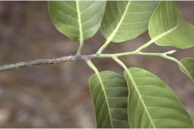
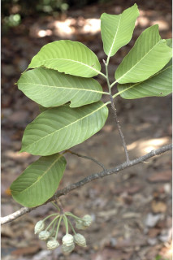
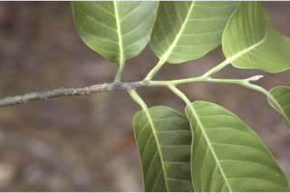
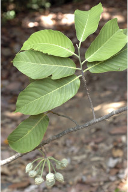
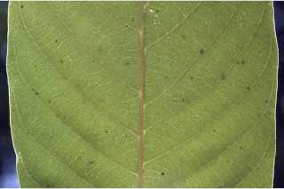
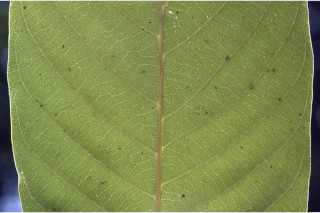

Trees, up to 30 m tall.
30ಮೀ ಎತ್ತರದವರೆವಿಗೂ ಬೆಳೆಯುವ ಮರಗಳು.
30 മീറ്റര് വരെ ഉയരത്തില് വളരുന്ന മരങ്ങള്.
மரம், 30 மீ. உயரம் வரை வளரக்கூடியது.
Bark smooth, greenish-grey, blaze pink.
ತೊಗಟೆ ನಯವಾಗಿದ್ದು ಹಸಿರು ಮಿಶ್ರಿತ ಬೂದುಬಣ್ಣ ಹೊಂದಿರುತ್ತದೆ ; ಕಚ್ಚುಗಳು ನಸುಗೆಂಪು ಬಣ್ಣದವು.
പച്ചകലര്ന്ന ചാര നിറത്തിലുള്ള, മിനുസമാര്ന്ന പുറംതൊലി, വെട്ടുപാടിന് പിങ്ക് നിറം.
மரத்தின் பட்டை வழுவழுப்பானது, பச்சை கலந்த சாம்பல் நிறம், உள்பட்டை பிங்க்.
Branchlets floccose when young and terete.
ಕಿರುಕೊಂಬೆಗಳು ಗುಂಡಾಕಾರವಾಗಿದ್ದು, ಎಳೆಯದಾಗಿದ್ದಾಗ ಉಣ್ಣೆಯಂತಹ ರೋಮದಿಂದ ಕೂಡಿರುತ್ತವೆ.
ഉപശാഖകള് ഇളതായിരിക്കുമ്പോള് ഉരുണ്ടതും, മൃദുരോമങ്ങള് കൂട്ടമായി നിറഞ്ഞിരിക്കുന്നതും ആണ്.
புதிய கிளைகள் ஃபிளாக்கோஸ் மற்றும் உருண்டையானது.
Leaves simple, alternate, distichous; petiole 0.4-0.8 cm long, stout; minutely hairy; lamina 12-25 x 4-7.5 cm, variable from narrow oblong, narrow-ovate, obovate, sometimes elliptic, apex acute to acuminate, base rounded, sometimes asymmetric, shining above, minutely hairy on nerves beneath; secondary_nerves 15-23 pairs, prominent, ascending; tertiary_nerves slender, percurrent, nearly parallel.
ಎಲೆಗಳು ಸರಳ, ಪರ್ಯಾಯ ವ್ಯವಸ್ಥೆಯಲ್ಲಿದ್ದು ಕಾಂಡದ ಎರಡೂ ಕಡೆ ಎದುರು ಬದರಿನ ಲಂಬ ಸಾಲಿನಲ್ಲಿರುತ್ತವೆ. ಎಲೆ ತೊಟ್ಟು 0.4 ರಿಂದ 0.8 ಸೆಂ.ಮೀ. ಉದ್ದವಿದ್ದು ಧೃಢ ಹಾಗೂ ಸೂಕ್ಷ್ಮ ರೋಮವುಳ್ಳವುಗಳಾಗಿರುತ್ತವೆ. ಎಲೆಪತ್ರ 12-25 × 4-7.5ಸೆಂ.ಮೀ. ಗಾತ್ರ ಹೊಂದಿರುತ್ತವೆ. ಇಕ್ಕಟ್ಟಾದ ಧೀರ್ಘ ಚತುರಸ್ರಾಕಾರ, ಇಕ್ಕಟ್ಟಾದ ಅಂಡಾಕಾರ ಬುಗುರಿಯಾಕಾರ ಕೆಲವು ವೇಳೆ ಅಂಡವೃತ್ತಾಕೃತಿಯ ಆಕಾರಗಳ ವೈವಿಧ್ಯತೆಯಲ್ಲಿರುತ್ತವೆ. ಪತ್ರಗಳ ತುದಿ ಚೂಪಾದುದರಿಂದ ಕ್ರಮೇಣ ಚೂಪಾಗುವ ಮಾದರಿಯಲ್ಲಿರುತ್ತವೆ. ಪತ್ರದ ಬುಡ ಗುಂಡಾಕಾರದಲ್ಲಿರುತ್ತವೆ. ಕೆಲವು ವೇಳೆ ಅಸಮವಾಗಿರುತ್ತವೆ ; ಪತ್ರದ ಮೇಲ್ಭಾಗ ಹೊಳಪಾಗಿದ್ದು, ತಳಭಾಗದ ಮಧ್ಯನಾಳ ಸೂಕ್ಷ್ಮವಾದ ರೋಮಗಳಿಂದ ಕೂಡಿರುತ್ತದೆ. ಎರಡನೇ ದರ್ಜೆಯ ನಾಳಗಳು 15 ರಿಂದ 23 ಜೋಡಿಗಳಿದ್ದು ಪ್ರಾಮುಖ್ಯವಾಗಿ ಕಾಣುವಂತಹವು ಹಾಗೂ ಆರೋಹಣ ವ್ಯವಸ್ಥೆಯಲ್ಲಿರುವಂತಹವು ; ತೃತೀಯ ದರ್ಜೆಯ ನಾಳಗಳು ತೆಳುವಾಗಿದ್ದು ಎಲೆದಿಂಡಿಗೆ ಅಡ್ಡವಾಗಿ ಕೂಡುವಂತಹವು ಮತ್ತು ಹೆಚ್ಚೂ ಕಡಿಮೆ ಸಮಾಂತರದಲ್ಲಿರುತ್ತವೆ.
ലഘുവായ ഇലകള്, ഏകാന്തരക്രമത്തില്, തണ്ടിന്റെ രണ്ടു ഭാഗത്ത് മാത്രമായടുക്കിയിരിക്കുന്നു; ചെറുതായി രോമിലമായ, ദൃഢമായ, ഇലഞെട്ടിന് 0.4 മതല് 0.8 സെ.മീ. വരെ നീളം; പത്രഫലകത്തിന് 12 മുതല് 25 സെ.മീ. വരെ നീളവും 4 മുതല് 7.5 സെ.മീ. വരെ വീതിയും, ആകൃതി വീതികുറഞ്ഞ ദീര്ഘായതമോ, വീതികുറഞ്ഞ അണ്ഡാകാരമോ, അപ അണ്ഡാകാരമോ ചിലപ്പോള് ദീര്ഘവൃത്താകാരമോ ആയി പലവിധത്തിലാകാം, പത്രാഗ്രം കൂര്ത്തതോ ദീര്ഘമോ ആണ്, പത്രാധാരം വൃത്താകാരത്തിലും, ചിലപ്പോള് അസമവൃത്തവുമാണ്; മുകളില് തിളങ്ങുന്നതും, കീഴ്ഭാഗത്ത് ഞരമ്പുകളില് രോമിലവുമാണ്; വ്യക്തമായതും ആരോഹണ ക്രമത്തിലുമുള്ള 15 മുതല് 23 വരെ ജോഡി ദ്വിതീയ ഞരമ്പുകളുണ്ട്; ഏതാണ്ട് സമാന്തരമായ, നേര്ത്ത ത്രിതീയ ഞരമ്പുകള്, പെര്കറന്റ് ആണ്.
இலைகள் தனித்தவை, மாற்றுஅடுக்கமானவை, இருநெடுக்கு வரிசையிலையடுக்கம் (டைஸ்டிக்கஸ்); இலைக்காம்பு 0.4-0.8 செ.மீ, நீளமானது, தடித்தது; சிறு உரோமங்களுடையது; இலை அலகு 12-25 X 4-7.5 செ.மீ., இலை வடிவம் பலவிதமானது அவை குறுகிய நீள்சதுரம், குறுகிய முட்டை வடிவம், தலைகீழ் முட்டை வடிவம், சிலவற்றில் நீள்வட்டம், அலகின் நுனி கூரியது முதல் அதிக்கூரியது, அலகின் தளம் வட்டமானது, சிலவற்றில் சமமற்றது, மேற்பரப்பு பளபளப்பானது, இலையின் கீழ்பரப்பில் நரம்புகள் சிறு உரோமங்களுடையது; இரண்டாம் நிலை நரம்புகள் 15-23 ஜோடிகள்; மூன்றாம் நிலை நரம்புகள் மெலிதானது, பெர்க்கரண்ட்.
Flowers in clusters, sometimes in racemes on older branches, greenish yellow.
ಹೂಗಳು ಸಾಮೂಹಿಕವಾಗಿರುತ್ತವೆ. ಕೆಲವು ವೇಳೆ ಹಳೆಯ ಕವಲುಗಳ ಮೇಲಿನ ಅನಿಯತ ಮಧ್ಯಾಭಿಸರ ಪುಷ್ಪಮಂಜರಿಯಲ್ಲಿರುತ್ತವೆ. .
പച്ച കലര്ന്ന മഞ്ഞ നിറമുള്ള പൂക്കള്, കൂട്ടമായി ഉണ്ടാകുന്നു, ചിലപ്പോള് മൂത്തശാഖകളില് റസീമുകളായി ഉണ്ടാകുന്നു.
மலர்கள் கொத்தாக காணப்படும், சிலவற்றில் ரெசீம்களாக முதிர்ந்த கிளைகளில் காணப்படும், பச்சை கலந்த மஞ்சள் நிறம்.
Cluster of 1-seeded berries, ovoid.
ಬೆರ್ರಿಗಳು ಗುಂಡಾಗಿದ್ದು ಒಂದು ಬೀಜವನ್ನು ಹೊಂದಿರುತ್ತವೆ ಹಾಗೂ ಸಾಮೂಹಿಕವಾಗಿರುತ್ತವೆ.
ഒറ്റ വിത്തുള്ള, അണ്ഡാകാര, സരസഫലങ്ങള് കൂട്ടമായുണ്ടാകുന്നു.
கொத்தான 1 விதையுள்ள முழுச்சதைகனி (பெர்ரி), முட்டை வடிவம்.


 





 
